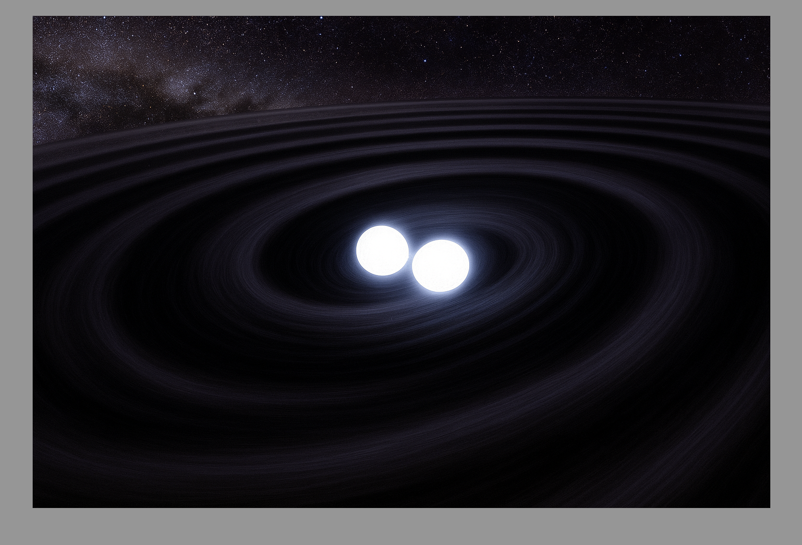
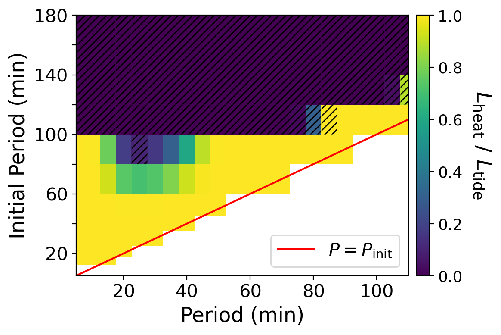
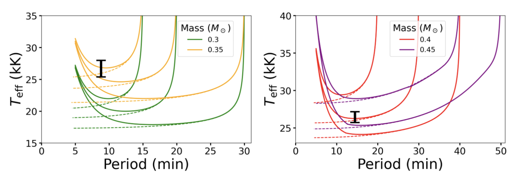

Ultra–short-period WD Binaries Are Not Undergoing Strong Tidal Heating
THIS PAGE UNDER CONSTRUCTION - see link below for research paper
image 1

I implemented a tidal heating model for short-period white dwarf binaries in MESA, assuming the tidal response inside the white dwarf is a gravity wave, a traveling wave that can transfer energy and angular momentum into the interior. The model self-consistently calculated the traveling wave amplitude as a function of white dwarf structure, for many white dwarf models as they evolved, and deposited energy into the white dwarf, heating it near the surface.
image 2

image 3
